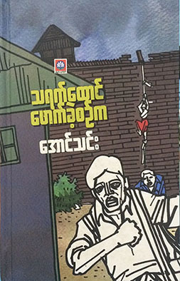

| Category | Details |
|---|---|
| Full Name | Aung Thin |
| Date of Birth | April 17, 1927 |
| Place of Birth | Taungdwingyi Township, British Burma |
| First Published Article | Breaking Thayet Prison (1959) |
| Career Highlights | Lecturer at Rangoon University and other institutions (1960s-1970s) |
| Political Stance | Refused to join the Burma Socialist Programme Party |
| Books Authored | Over 50 books on ethics, culture, and youth motivation |
| Public Speaking | Delivered over 200 literature talks locally and internationally, including in Singapore |
| Co-founder | Free Funeral Service Society (2001) |
| Award | National Literary Award (2012) |
"When Thayet Taung Broke" is a true-life adventure book by Burmese author Aung Thin, first published in September 2013 by Zun Pwint Bookstore. The book recounts Aung Thin's arrest during the 1949 Color Rebellion and his time in various prisons, including Magway, Taungdwingyi, Pyidaungsu, and Thayet Prison. In November 1949, he escaped Thayet Prison with fellow prisoners Ko Tain Maung and Ko Aung Kyi. The content is divided into three parts: His arrival at Thayet Prison, life inside, and the escape attempt. His journey toward Taungdwingyi. His travels from Taungdwingyi to Yenangyaung.
He wrote more than 50 books on genres of ethical conducts, cultural knowledge and motivation of youth inspiration.Here are some famous books by sayar Aung Thin.
Email: binglebb11@gmail.com